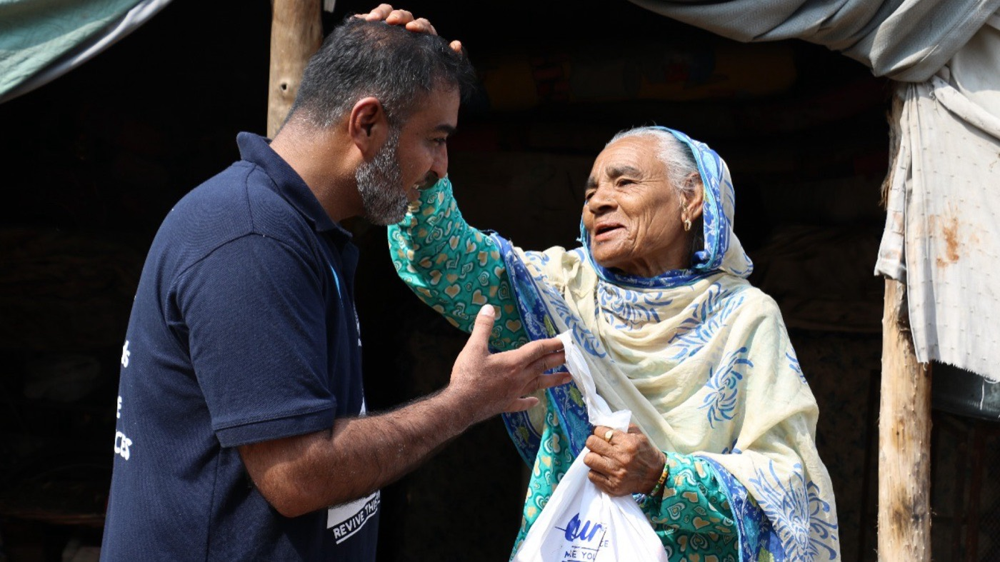

- 100 € donnés vous coûtent 34 €, ou 25 € pour l'aide alimentaire en France
- Reçu fiscal par e-mail dans la minute, récapitulatif annuel en janvier
- Zakat, sadaqa et parrainage déductibles comme tout don
Combien me coûte vraiment mon don ?
Saisissez un montant et le type de don. Le simulateur applique le bon taux et le plafond de 2 000 € du dispositif Coluche.
Le résultat est une estimation : la réduction est plafonnée à 20 % de votre revenu imposable et ne peut pas dépasser l'impôt que vous devez. L'excédent se reporte sur les cinq années suivantes.
66 % : la règle générale pour les particuliers
Pour un particulier domicilié en France, 66 % du montant du don à une association d'intérêt général est déductible de l'impôt sur le revenu, dans la limite de 20 % du revenu imposable. Si vos dons dépassent ce plafond, l'excédent est reportable sur les cinq années suivantes, dans les mêmes conditions. Concrètement, 100 € donnés vous coûtent 34 €, 500 € vous coûtent 170 € et 1 000 € vous coûtent 340 €.
Il s'agit d'une réduction d'impôt, pas d'une déduction du revenu : elle vient directement diminuer l'impôt que vous devez. C'est donc le même avantage quel que soit votre taux d'imposition, dès que vous êtes imposable. Ce taux s'applique à tous nos programmes internationaux : puits, parrainage d'orphelins, urgences, et à la zakat.

Donner avant le 31 décembre
100 € vous coûtent 34 € après réduction d'impôt de 66 %.
Faire un donReçu fiscal immédiat · paiement sécurisé · 80 % en missions sociales
75 % jusqu'à 2 000 € : les actions France éligibles
Le dispositif dit « Coluche » (article 200, 1 ter du Code général des impôts) porte la réduction à 75 % pour les dons qui financent la fourniture gratuite de repas ou de soins, ou l'aide au logement des personnes en difficulté. Il s'applique jusqu'à 2 000 € de dons par an et par foyer ; au-delà, la fraction qui dépasse bascule au taux de 66 %. Ce plafond, longtemps fixé à 1 000 €, a été porté à 2 000 € par la loi de finances pour 2026 pour les dons versés depuis le 14 octobre 2025. Un don de 1 000 € fléché sur ces actions vous coûte donc 250 €.
Chez Muslim Hands France, sont éligibles au taux de 75 % : les maraudes et les colis d'hiver, le restaurant solidaire La Fourchette Fraternelle à Marseille, les iftars solidaires du Ramadan et l'accompagnement des mineurs non accompagnés. Le reçu fiscal précise le taux applicable ; vous n'avez rien à calculer.

Exemples chiffrés : ce que votre don vous coûte
| Don | Coût réel à 66 % | Coût réel à 75 % | Ce que cela finance |
|---|---|---|---|
| 30 € | 10,20 € | 7,50 € | Un colis chaleur pour une personne sans abri |
| 50 € | 17 € | 12,50 € | Un colis alimentaire pour une famille pendant un mois |
| 100 € | 34 € | 25 € | Dix repas chauds à La Fourchette Fraternelle |
| 468 € | 159 € | — | Un an de parrainage d'un orphelin (39 € par mois) |
| 900 € | 306 € | — | Un puits de village pour 300 à 500 personnes |
| 2 500 € | 850 € | 670 € | 75 % sur les 2 000 premiers euros, 66 % sur les 500 suivants |
Le taux de 75 % ne s'applique qu'aux actions d'aide alimentaire et d'hébergement en France. Les montants sont arrondis au centime.
La zakat est-elle déductible des impôts ?
Oui. La zakat versée à Muslim Hands France est, aux yeux de l'administration fiscale, un don à une association d'intérêt général : elle ouvre droit à la réduction de 66 % comme tout autre don. Certains donateurs choisissent de reverser le montant de la réduction en sadaqa ; c'est un choix personnel, pas une obligation. La zakat al fitr et le sacrifice de l'Aïd sont déductibles dans les mêmes conditions. Zakat et impôts, en détail.

Votre reçu fiscal : quand et comment le recevoir
Pour un don en ligne, le reçu fiscal est envoyé par e-mail immédiatement après le paiement. Pour les dons réguliers par prélèvement, un récapitulatif annuel vous parvient en janvier, avec le total des douze mois. Pour un don par chèque ou virement, le reçu est édité sous quinze jours. Vous retrouvez tous vos reçus dans votre espace donateur, et vous pouvez en demander un duplicata au 01 49 48 05 05.
Le reçu mentionne le montant, la date, le taux de réduction applicable et nos références légales : association loi 1901 n° 1407, SIREN 498 845 502. Conservez-le trois ans : l'administration peut le demander.

Déclarer son don : cases 7UD et 7UF
Vous n'avez pas à joindre vos reçus à la déclaration : vous reportez simplement vos totaux sur la déclaration 2042 RICI (réductions et crédits d'impôt), ou dans la rubrique « Dons » de la déclaration en ligne, et vous conservez les reçus en cas de demande de l'administration.
| Case | Dons concernés | Taux | Plafond |
|---|---|---|---|
| 7UD | Dons aux organismes d'aide aux personnes en difficulté (repas, soins, logement) : nos actions en France | 75 % | 2 000 € par an ; l'excédent est reporté automatiquement en 7UF |
| 7UF | Dons aux associations d'intérêt général : programmes internationaux, zakat, parrainage, puits, urgences | 66 % | 20 % du revenu imposable, excédent reportable 5 ans |
Tout don effectué avant le 31 décembre à minuit compte pour la déclaration de l'année suivante. Un don du 30 décembre 2026 apparaît donc sur la déclaration du printemps 2027, pour une réduction sur l'impôt 2026.
Je donne
En ligne, par prélèvement, chèque ou virement, avant le 31 décembre.
Je reçois mon reçu
Immédiatement par e-mail, ou en janvier pour les dons réguliers.
Je déclare
Case 7UD pour les dons à 75 %, case 7UF pour les dons à 66 %.
Je suis remboursé
La réduction diminue l'impôt dû, ou vous est restituée si vous avez trop payé.
Entreprises : le mécénat déductible à 60 %
Les entreprises soumises à l'impôt sur les sociétés ou à l'impôt sur le revenu bénéficient d'une réduction d'impôt de 60 % du montant du don, dans la limite de 20 000 € ou de 0,5 % du chiffre d'affaires hors taxes lorsque ce second montant est plus élevé. L'excédent est reportable sur cinq exercices. Le don peut être financier, en nature (produits, matériel) ou en compétences (mise à disposition de salariés).
Nous proposons aux entreprises des projets fléchés avec un rapport dédié : un puits au nom de l'entreprise, une classe d'une École de l'Excellence, une clinique mobile, un hiver de repas chauds à Marseille. Les contreparties (visibilité, événement avec les équipes) restent dans la limite de 25 % du don admise par l'administration. Contact mécénat : 01 49 48 05 05 ou contact@muslimhands.fr.

Questions fréquentes sur la déduction fiscale des dons
Combien me coûte réellement un don de 100 € ?
34 € après réduction d'impôt de 66 %, ou 25 € si le don finance l'aide alimentaire et l'hébergement en France (75 % jusqu'à 2 000 € par an).
Quand reçois-je mon reçu fiscal ?
Par e-mail immédiatement après un don en ligne. Pour les dons réguliers, un récapitulatif annuel vous parvient en janvier.
La zakat est-elle déductible des impôts ?
Oui, comme tout don à une association d'intérêt général : 66 % du montant. Zakat et impôts.
Jusqu'à quelle date pour l'année fiscale ?
Tout don effectué avant le 31 décembre à minuit compte pour la déclaration de l'année suivante.
Et si je ne paie pas d'impôt ?
La réduction ne peut pas dépasser l'impôt dû : si vous n'êtes pas imposable, elle ne s'applique pas. Votre don garde toute sa valeur sur le terrain.
Les dons d'entreprise sont-ils déductibles ?
Oui, au titre du mécénat : 60 % du don, dans la limite de 20 000 € ou de 0,5 % du chiffre d'affaires. Voir la section entreprises.

100 € donnés, 34 € dépensés.
Reçu fiscal dans la minute. Le reste, c'est l'État qui le prend en charge.
Faire un don